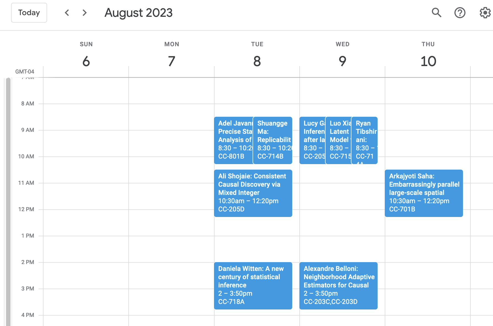

jsm2023 is an R package with all the JSM talks. It makes personalized recommendations for talks (based on citation network data) and exports your schedule as an ical file that can be loaded into Google Calendar and similar.
Getting started
To install the package:
remotes::install_github("jacobbien/jsm2023-project", subdir = "jsm2023")An example of the sort of thing you can do with the package:
library(jsm2023)
my_coauthors <- get_coauthors("Jacob Bien") # Name as it appears in JSM program
people_cited_by_me <- get_out_citations("Jacob Bien")
people_citing_me <- get_in_citations("Jacob Bien")
some_people <- c(my_coauthors, people_cited_by_me[1:5], people_citing_me[1:5])
schedule <- get_talks(speakers = some_people, session_types = "Paper")This produces a data frame of talks:
schedule %>%
dplyr::select(speaker, title)
#> # A tibble: 10 × 2
#> speaker title
#> <chr> <glue>
#> 1 Andrea Kaplan An improved sampler for recursive Bay…
#> 2 Shuangge Ma, Lucas Janson, Michael Law Discussion of "JASA Theory and Method…
#> 3 Adel Javanmard Precise Statistical Analysis of Class…
#> 4 Shuangge Ma Replicability in cancer omics data an…
#> 5 Ali Shojaie Consistent Causal Discovery via Mixed…
#> 6 Daniela Witten A new century of statistical inference
#> 7 Ryan Tibshirani How many parameters does your interpo…
#> 8 Luo Xiao Latent Factor Model for Multivariate …
#> 9 Lucy Gao Inference after latent variable estim…
#> 10 Arkajyoti Saha Embarrassingly parallel large-scale s…See ?get_talks for the other ways you can filter talks. Finally, you can export this in the ical format, which can be imported into Google Calendar and other standard calendars:
export_calendar_to_ics(schedule, file = "jsm-talks.ics")Once imported into Google Calendar, we get the following:

About
We scraped the JSM 2023 program and wrangled decades of citation and coauthorship data from Semantic Scholar and arxiv. We have also included functionality for exporting your schedule as an ical that can be loaded into Google Calendar or similar. The result is a package that streamlines the process of finding talks that you may want to attend. The first version of this was done as a web app for JSM 2019 with Ronak Upadhyaya and the second version, for JSM 2022, was done with Yibin Xiong. jsm2023 was written using literate programming. In particular, the entire package was generated by “litr-knitting” a single Rmd file. To learn more about the litr package and the literate programming approach to writing R packages, see here.
Citation and coauthor data acknowledgments
The citation data came from Semantic Scholar’s API and is associated with the following paper:
Waleed Ammar, Dirk Groeneveld, Chandra Bhagavatula, Iz Beltagy, Miles Crawford, Doug Downey, Jason Dunkelberger, Ahmed Elgohary, Sergey Feldman, Vu A. Ha, Rodney Michael Kinney, Sebastian Kohlmeier, Kyle Lo, Tyler C. Murray, Hsu-Han Ooi, Matthew E. Peters, Joanna L. Power, Sam Skjonsberg, Lucy Lu Wang, Christopher Wilhelm, Zheng Yuan, Madeleine van Zuylen, Oren Etzioni, Construction of the Literature Graph in Semantic Scholar. NAACL 2018.
Coauthorship data came also from arxiv metadata.